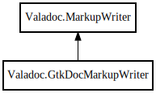

Valadoc.GtkDocMarkupWriter – valadoc Reference Manual
Packages
valadoc
Valadoc
GtkDocMarkupWriter
content
GtkDocMarkupWriter
content_inline_element
inline_element
reset
builder
GtkDocMarkupWriter
Object Hierarchy:

Description:
public
class
GtkDocMarkupWriter
:
MarkupWriter
Namespace:
Valadoc
Package:
valadoc
Content:
Properties:
public
unowned
string
content
{
get
; }
Creation methods:
public
GtkDocMarkupWriter
()
Methods:
protected
override
bool
content_inline_element
(
string
name)
protected
override
bool
inline_element
(
string
name)
public
void
reset
()
Fields:
private
unowned
StringBuilder
builder
Inherited Members:
All known members inherited from class Valadoc.MarkupWriter
MAX_COLUMN
WriteFunc
break_line
check_column
content_inline_element
current_column
do_write
end_tag
escape
indent
inline_element
last_was_tag
raw_text
set_wrap
simple_tag
start_tag
text
wrap
write